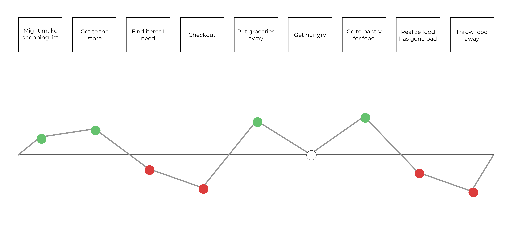
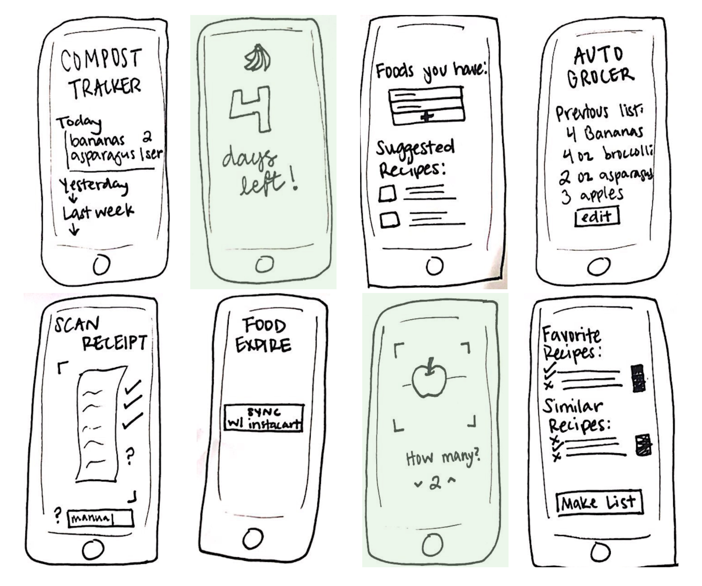
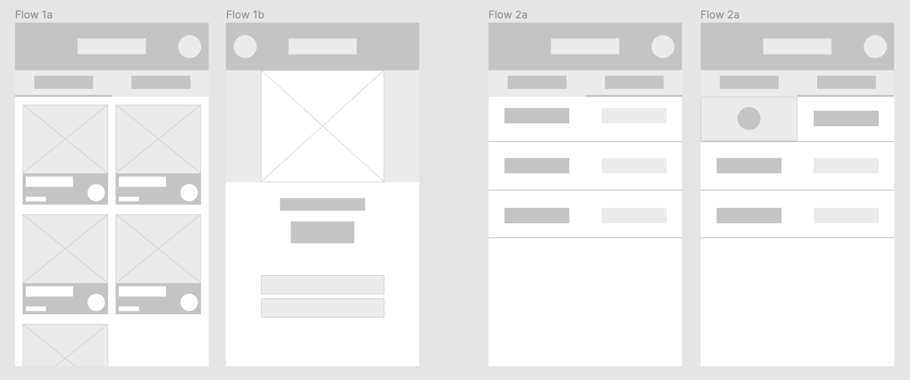
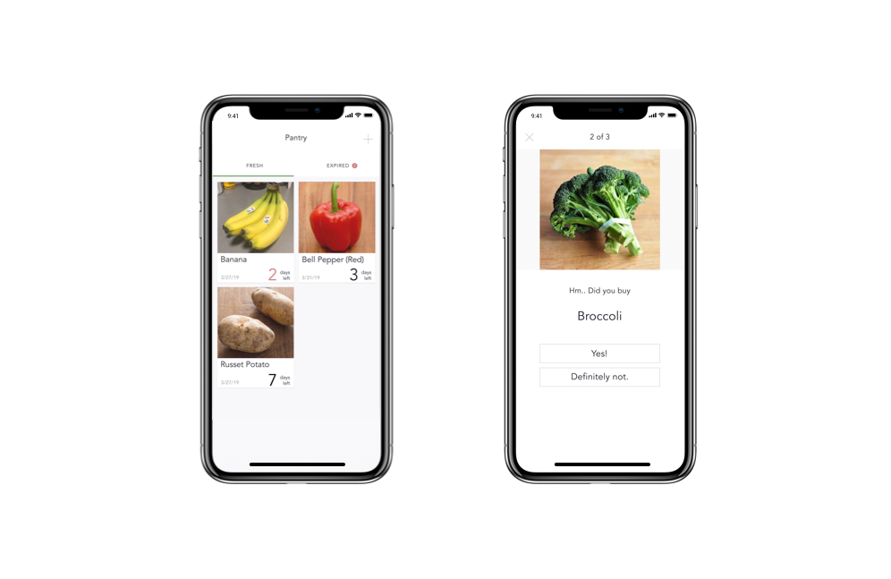

FreshPro
Helping shoppers reduce waste

Overview
The goal of this project was to apply research methods and design principles to solve a user problem with a specific focus on user centered design. I did this by putting a strong emphasis on user feedback, design testing, and design iteration throughout the entire course of the 16-week project.
For this project, I designed an app called FreshPro that would help users keep track of their produce, ultimately reducing waste at home and saving money at the grocery store.
Audience
The audience for this project are people who:
- Often throw away spoiled produce
- Do the majority of grocery shopping for their household
Team/Role
Although this was a project that I worked on alone, I did get weekly feedback from my professor throughout the duration of the project as well as monthly feedback from my classmates.
Constraints
This was the first project I worked on that challenged my skill proficiency with prototyping tools. During the duration of this project, I was simultaneously trying to get more comfortable with tools such as inVision, Adobe XD, and Sketch. I had to quickly learn how to be able to effectively communicate the visual design for this project.
Design Process
Defining the Problem
I didn’t start this project with this particular product or problem in mind. I began by creating a list of five problems that I personally deal with. Then I narrowed that list down to three, and finally settled on my chosen problem statement, which was “My produce keeps going bad.” This list was a good way for me to find a problem to solve that I was passionate about and one that I already knew existed.
I followed this with asking myself the 5 whys, which really helped me dig deep and establish the root problem I’m designing for.
5 Whys
“My produce keeps going bad.”
Why? Because I take too long to cook it
Why? Because I buy too much
Why? Because I don’t know how much I need
Why? Because I buy groceries on impulse
Why? Because I don’t keep track of my groceries
“My produce keeps going bad because I don’t keep track of my groceries.”
Research
After narrowing down the root problem, I created a persona along with a molecule to represent user demographics, goals and needs. The molecule gave me a visual of how my persona, problem statement, and solution relate to/affect one another. This helped me focus on potential users who relate to my original problem, and keep them at the center of the design process.
I constructed an interview script and met up with three people to get some feedback. I wanted to understand what people currently experience with the entire process of food consumption, from buying groceries to making dinner to throwing away spoiled food. This helped me gain a real-world perspective of what my users go through and also helped prove/disprove any assumptions I made with my persona.
With this new perspective, I created a journey map that helped establish high and low points throughout the user experience. The journey map gave me a visual interpretation of their experience and I was able to focus on the pain points that could use improvement and would be the most practical to design for. My user’s journey had a positive reaction to making and using shopping lists, which surprised me and was different than my assumptions. I felt like the first main negative area was more about the shopping experience, and I felt that solving that problem wouldn’t change my user’s original problem. I focused on the second negative area of the journey map that I wanted to solve for, which was the point in time where food soils and gets thrown away.
Design
I used crazy 8s to quickly sketch out different design possibilities. This was a great way for me to ideate with no restrictions or limits, while also detaching myself from any preconceived ideas about the design. This is one of my favorite parts of the process because I love sharing my early ideas with others, getting feedback, and iterating my ideas with inspiration from others.
I ended up combining two different ideas for my design. The two highlights ideas used together could tackle the problem my users were experiencing in the simplest way possible. Simplicity was important to me because I didn’t want my users to feel the same negative feelings they have with their current experience.
Testing
Once I decided on a specific concept, I reached back out to my three interviewees for more feedback. I let them interact with some rough mockups of the design and asked questions about how they felt about it. My goal wasn’t to test the visuals of the design, but to test the user flow and what actions were necessary to create a positive experience. I got some great feedback that helped me improve the flow of my design and narrow down what expectations other potential users may have for the app.
Feedback
- List needs to be renamed
- List needs to have purchase/added dates
- List needs a way to edit/delete items
- Scan needs a way to start scan/take photo
- Possibly add a grocery list/compost list option
After getting more feedback, I established a few design goals for myself before my next round of iterations. I did this to make sure that any visual design decisions I made were based off of what I wanted to accomplish for my users. Since I was new to all of the prototyping tools during this project, this was a difficult part of the process for me. Having a bunch of shiny new prototyping tools was fun and exciting, but I also didn’t want to get lost in the idea of creating a beautiful product. Establishing these design goals for myself was really helpful and productive and helped me stay focused on my user's needs.
Design Goals
Give users a simple interface that reduces cognitive overload.
Keep actual time in application low to minimize user effort.
Keep useful information at forefront to avoid unnecessary steps.
For the next round of testing, I reached out to three new people to interview for feedback. Since my original interviewees have seen the process from the beginning, I felt that new interviewees would give me a new perspective. This helped make sure I was designing for every user in mind, and not just the specific ones I’ve talked to.
For my last round of interviews, I reached out to people from my first round of testers as well as my second round. I was excited to share the final product with them for two reasons:
- Even though the project was at its end, I still valued their feedback. I’m always looking ways to improve my designs and expand my point of view.
- The fact that they were people I interviewed in the beginning who were still invested in my project 10 weeks later tells me that there’s a real market for produce tracking, and that makes me feel a little better about throwing out a couple brown bananas.
Results
View my interactive prototype Here.
Made with InVision.
Retrospective
If I could change anything about this project, I would:
Add a list feature. Although it was a positive area in my journey map, it showed its own importance through a lot of user feedback.
Document more. I had all of my deliverables, but I didn’t document how and why I personally got some of my process. It was difficult to go through 16 weeks of work and figure out what I was thinking during certain phases of the project.
Do testing with more users. I was a little out of my comfort zone with reaching out to so many people, but I think it would have been more helpful if I did. Getting comfortable with user testing is definitely something I look forward to as I work on more projects because I loved working with all of my participants to build something centered around their needs.